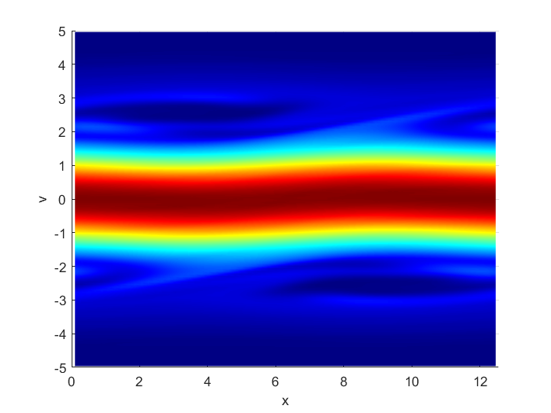

My general research area is algorithm development for numerically solving partial differential equations, in particular, hyperbolic equations and kinetic models. Currently, I am collaborating with William Taitano (Air Force Research Laboratory) and Jingmei Qiu (University of Delaware) to develop a conservative, structure-preserving low rank tensor method for solving the Vlasov-Fokker-Planck equation. My previous project involved developing a Eulerian-Lagrangian finite volume method for solving convection-diffusion equations. Other specific areas of interest include: WENO methods, Eulerian-Lagrangian/semi-Lagrangian methods, numerical tensors, and the Fokker-Planck operator.

Publications and Pre-prints